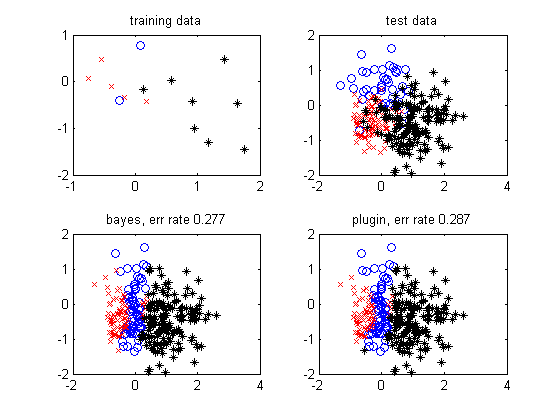

Illustrate benefit of using T distribution instead of plugin estimate
We use a naive Bayes classifier with 2 Gaussian features
% This file is from pmtk3.googlecode.com function naiveBayesBayesianDemo() setSeed(0); C = 3; [Xtrain, Ytrain] = makeDataHelper([2 5 8]*1); [Xtest, Ytest] = makeDataHelper([2 5 8]*20); %[Xtrain, Ytrain] = makeDataHelper([2 2 2]*5); %[Xtest, Ytest] = makeDataHelper([2 2 2]*20); [styles, colors, symbols] = plotColors(); figure; subplot(2, 2, 1) for c = 1:C ndx = Ytrain==c; plot(Xtrain(ndx, 1), Xtrain(ndx, 2), [colors(c) symbols(c)]); hold on end title('training data') subplot(2,2,2) for c = 1:C ndx = Ytest==c; plot(Xtest(ndx,1), Xtest(ndx, 2), [colors(c) symbols(c)]); hold on end title('test data') % train for c=1:C ndx = Ytrain==c; X = Xtrain(ndx, :); n = length(ndx); post.nu(c) = n; post.mu(c, :) = mean(X, 1); post.kappa(c) = n; post.pi(c) = n; post.s2(c, :) = var(X, 1, 1); % divide by n, across rows mle.mu(c, :) = mean(X, 1); mle.s2(c, :) = var(X, 1, 1); mle.pi(c) = n; end post.pi = normalize(post.pi + 1); mle.pi = normalize(mle.pi); % test ndims = 2; logprobBayesC = zeros(size(Xtest, 1) ,C, ndims); logprobPluginC = zeros(size(Xtest, 1) ,C, ndims); for c=1:C for j=1:ndims sf = (1+post.kappa(c))/post.kappa(c); model.mu = post.mu(c, j); model.Sigma = sf*post.s2(c, j); model.dof = post.nu(c); logprobBayesC(:,c,j) = studentLogprob(model, Xtest(:,j)); model.mu = mle.mu(c, j); model.Sigma = mle.s2(c, j); logprobPluginC(:,c,j) = gaussLogprob(model, Xtest(:, j)); end end Ntest = length(Ytest); logprobBayes = sum(logprobBayesC, 3); % sum across features logprior = repmat(log(post.pi), Ntest, 1); yhatBayes = maxidx(logprobBayes + logprior, [], 2); % max across classes logprobPlugin = sum(logprobPluginC, 3); % sum across features logprior = repmat(log(mle.pi), Ntest, 1); yhatPlugin = maxidx(logprobPlugin + logprior, [], 2); % max across classes errorsBayes = find(yhatBayes ~= Ytest); errorsPlugin = find(yhatPlugin ~= Ytest); errRateBayes = length(errorsBayes)/length(Ytest); errRatePlugin = length(errorsPlugin)/length(Ytest); subplot(2,2,3) for c = 1:C ndx = yhatBayes == c; plot(Xtest(ndx, 1), Xtest(ndx, 2), [colors(c) symbols(c)]); hold on end title(sprintf('bayes, err rate %5.3f', errRateBayes)) subplot(2,2,4) for c = 1:C ndx = yhatPlugin == c; plot(Xtest(ndx, 1), Xtest(ndx, 2), [colors(c) symbols(c)]); hold on end title(sprintf('plugin, err rate %5.3f', errRatePlugin)) end function [X, Y] = makeDataHelper(nPts_n) % Generate three gaussian clusters in 2d mu = [0, 0.6; -0.3 -0.4; 1 -0.5]'; var = [0.6, 0.4, 0.6]; N = sum(nPts_n); dim = size(mu,1); X = zeros(2, N); Y = zeros(1, N); curidx = 1; for j = 1:3 X(:,curidx:curidx+nPts_n(j)-1) = repmat(mu(:,j), 1, nPts_n(j))+var(j).*randn(dim, nPts_n(j)); Y(curidx:curidx+nPts_n(j)-1) = j; curidx = curidx + nPts_n(j); end X = X'; % N by 2 Y = Y'; end